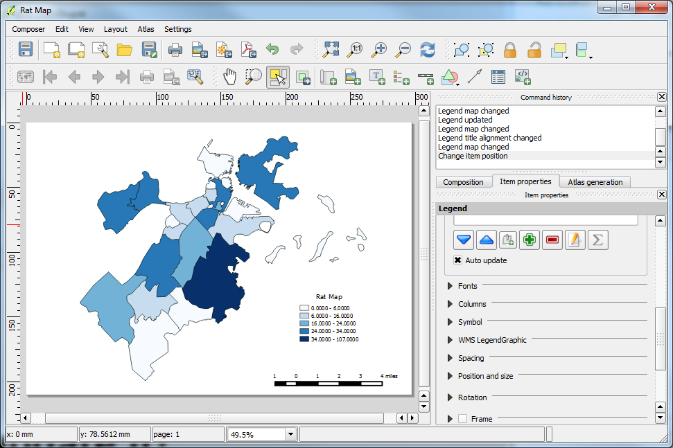

Introduzione a QGIS
Fare una mappa
Presentazione derivata da Maptime Boston
Cos'é QGIS?

Rilasciato con licenza
GNU General Public License

Cos'é OSGEO?

l'acronimo di
Open Source Geospatial FoundationComunità che sviluppa
QGIS, Grass, OpenLayers, etc.
Componenti di QGIS
QGIS Desktop
QGIS Browser
QGIS Server
QGIS Web Client
QGIS for Android (beta)
su mobile! Testate a vostro rischio e pericolo
Facciamo una mappa!
Scaricate: QGIS 2.6
Creiamo una RAT MAP!
con Open Data Boston
Conosciamo la GUI
Map Navigation Toolbar
File Toolbar

Layers

Attribute Toolbar
Layers Panel
Browser
Le altre toolbar si attivano qui
View -> Toolbars
Iniziamo
Aggiungi i Dati
Aggiungi Data Package che contiene:
- Quartieri di Boston
- Attività dei roditori (CSV)
Che formati possiamo aggiungere?
tutti i vettoriali OGR
tutti i formati Raster GDAL
PostGIS, OracleSpatial, SpatialLite
Tabular (csv, tsv, etc.)
Proiezioni
La proiezione di default è quella assegnata al progetto,
se non è definita, utilizza WGS84
Layers -> Individual basis
Project -> Project Properties
Per cambiare la proiezione basta
fare click destro su Layer -> Save As
Abilitare la proiezione di layer
'on the fly'

Assegna la simbologia
Layer Properties
Symbolize in Style Tab
Esplorate le altre proprietà
Labels
Fields
Display
Actions
Joins
Diagrams
Metadata
Editing
Oggi non abbiamo tempo ma si può FARE!
Vector Menu
Provate Points in Polygon
per calcolare quale quartiere ha il maggior numero di topi
Per esportare un Layer
Tasto destro -> Save as...
Mantiene la proiezione assegnata

Print Composer
Per fare una mappa in QGIS si utilizza il Print Composer
Aggiungete l'elemento mappa

Create il layout della vostra mappa in Print Composer.
Aggiungendo:
- Mappa,
- Legenda,
- Scala,
- Freccia del Nord,
- etc. etc.
Non c'è più tempo,
salvate le modifiche per tornare ad aggiornarla!
Il layout di stampa
Soddisfatti?
Potete esportare:
immagine
PDF
SVG
Altre caratteristiche:
Servizi di mappa
QGIS Server
Webmap
Python
Collegamenti ai Database
Plugins!
Un enorme vantaggio di QGIS
Migliaia di Plugins Open Source
Plugins -> Plug In Manager